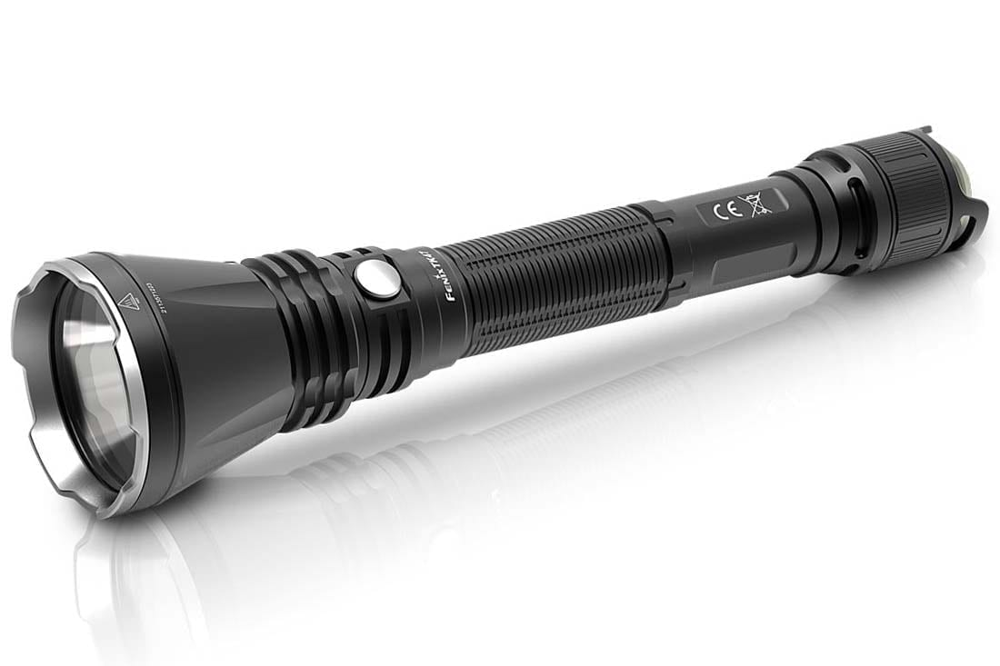

A true and honest account of the life and times of one Sanjai Subramanian for the period of days from April ninth, 2021 to April eleventh, 2021
First penned in the Year of our Lord 2021
by the hand of the very same individual to whom this treatise pertains
Day 1
All is quiet. Too quiet. I fear the monster that hunts my crew has finished off everyone save myself. At this rate, I suspect that I will be unable to make it back to Earth in time for my CS class, which is of course my foremost concern while trapped in a spaceship with a ravenous alien predator seeking my blood.
I shall now regale you with my backstory, ostensibly physical and clearly nonsapient journal of mine.
It feels like it was only yesterday that I first boarded the SS CoolShipName bound for Earth from somewhere in the Andromeda galaxy. I likely feel this way because it was only yesterday, but it feels like a lifetime ago. I suspect that has something to do with the ravenous alien which has consumed most of my fellow crewmembers, most of whom were my close friends after having played a few board games last night.
When I first came aboard, the captain gave me some inspiring words, which I have since taken to heart:
"Don't get yerself killed, or it means more paperwork for me."
Truly, the man was like a father to me in the few hours during which I knew him.
However, I digress. Now, dear journal, I shall provide you with an itemized list of my current supplies. In addition, I shall provide my own expert illustration of the flashlight, which I believe to be the key out of my current predicament.
- One (1) left-hand standard issue space glove
- One (1) right-hand standard issue space glove
- One (1) military grade gasoline powered flamethrower, in working condition
- Three (3) new AA batteries
- One (1) functioning flashlight, at approximately 50% power
- Five (5) fire extinguishers, all unused
- Four (4) 200-liter drums, all full of gasoline
- Fifteen (15) days worth of rations, all frozen
If only I had some kind of way to destroy the monster, but unfortunately, all I know of it is that it is deathly afraid of fire and would likely burn very easily. Alas! I fear I shall rot away in the command bridge of the venerable SS CoolShipName.
Day 2
I have figured out how to survive this nightmare! Listen in awe as I elucidate you as to the depths of my genius, nonsapient journal!
The plan was simple, and I shall outline it in an ordered list for no apparent reason:
- Retrieve the canned food previously mentioned to be in storage
- Fuel the flamethrower
- Apply the latter liberally to the former until well-cooked
- Profit
In fact, this has made me so ecstatic, I somehow have a recording of a cow's moo! (Look it's late and I'm getting tired here, I can't keep contriving reasons for all these things)
I had initially despaired of the flamethrower ever coming in handy, but my brilliant mind is not to be deterred by any means! Expect imminent news of my impending success against the monster keeping me captive.
Day 3
It seems the monster was tired by killing all of my former friends. I made my daring escape from the spaceship, though I had to distract it by throwing the flamethrower into a hallway. However, I managed to make my way to the escape pod and should be able to reach Earth within the next 15-16 million years. Mission success, I say!
In other exciting news, I have managed to figure out how to hide certain entries in this journal behind little arrows, like so:
A cunning cipher to draw attention away from the arrow
Juicy top-secret information
Using this information, I shall be able to hide all manner of industrial secrets where none of my enemies may find them.
I can already imagine what the news will be like when I get back home...